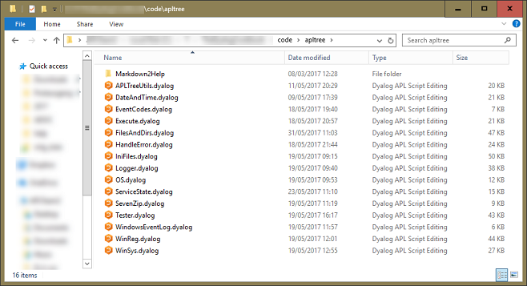
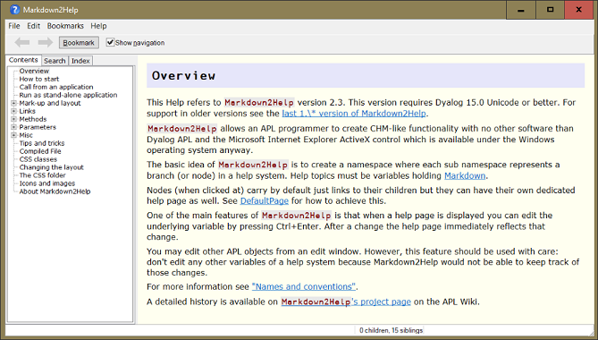
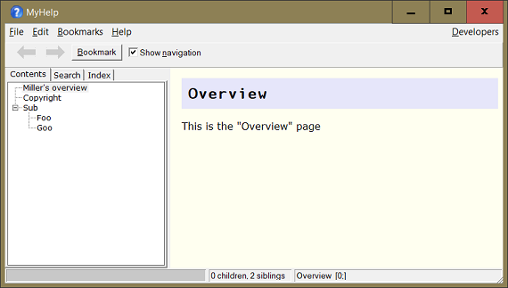
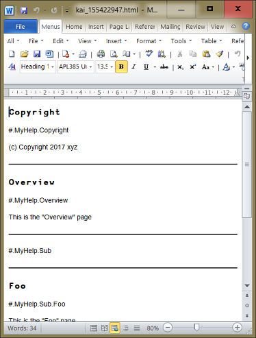

<!DOCTYPE html>
<html lang="en">
<head>
<meta http-equiv="X-UA-Compatible" content="IE=edge">
<meta charset="utf-8">
<title>Help</title>
<link href="./CSS/BlackOnWhite_screen.css" rel="stylesheet" media="screen">
<link href="./CSS/Cookbook_Chapter_screen.css" rel="stylesheet" media="screen">
<link href="./CSS/snap.css" rel="stylesheet" media="screen">
<link href="./CSS/BlackOnWhite_print.css" rel="stylesheet" media="print">
<link href="./CSS/Cookbook_Chapter_print.css" rel="stylesheet" media="print">
<script src="./JavaScript/snap.js"></script>
</head>
<body>
<div class="snap-drawers">
<div class="snap-drawer snap-drawer-left">
<div class="h_tag">
<h3>Chapters</h3>
</div>
<ol>
<li><a href="./01-Introduction.html" class="external_link">Introduction</a></li>
<li><a href="./02-Structure.html" class="external_link">Structure</a></li>
<li><a href="./03-Packaging.html" class="external_link">Packaging</a></li>
<li><a href="./04-Logging%20.html" class="external_link">Logging </a></li>
<li><a href="./05-Configuration.html" class="external_link">Configuration</a></li>
<li><a href="./06-Debugging-EXEs.html" class="external_link">Debugging EXEs</a></li>
<li><a href="./07-Handling-errors.html" class="external_link">Handling errors</a></li>
<li><a href="./08-Testing.html" class="external_link">Testing</a></li>
<li><a href="./09-Documentation.html" class="external_link">Documentation</a></li>
<li><a href="./10-Make.html" class="external_link">Make</a></li>
<li><a href="./11-Providing-help.html" class="external_link">Providing help</a></li>
<li><a href="./12-Scheduled-Tasks.html" class="external_link">Scheduled Tasks</a></li>
<li><a href="./13-Windows-Services.html" class="external_link">Windows Services</a></li>
<li><a href="./14-Windows-Event-Log.html" class="external_link">Windows Event Log</a></li>
<li><a href="./15-Windows-Registry.html" class="external_link">Windows Registry</a></li>
<li><a href="./16-Creating-SetUp.exe.html" class="external_link">Creating SetUp.exe</a></li>
<li><a href="./17-Regular-Expressions.html" class="external_link">Regular Expressions</a></li>
<li><a href="./18-Acre.html" class="external_link">Acre</a></li>
<li><a href="./19-GUI.html" class="external_link">GUI</a></li>
<li><a href="./20-Git.html" class="external_link">Git</a></li>
</ol>
<div class="h_tag">
<h3>Appendices</h3>
</div>
<ol>
<li><a href="./Appendix-01_Windows-environment-vars.html" class="external_link">Windows environment vars</a></li>
<li><a href="./Appendix-02_User-commands.html" class="external_link">User commands</a></li>
<li><a href="./Appendix-03_aplcores-&-WS-integrity.html" class="external_link">aplcores & WS integrity</a></li>
<li><a href="./Appendix-04_Development-environment.html" class="external_link">Development environment</a></li>
<li><a href="./Appendix-05_Special-characters.html" class="external_link">Special characters</a></li>
</ol>
<div class="h_tag">
<h3>Misc</h3>
</div>
<ul>
<li><a href="10-Make.html">Previous chapter</a></li>
<li><a href="12-Scheduled-Tasks.html">Next chapter</a></li>
<li><a href="./Dyalog_Cookbook.html" class="external_link" alt="All chapters, for printing" title="All chapters, for printing">Single document<br></a></li>
</ul>
</div>
</div>
<div id="mainmenu">
<a href=# style="color:black;"><p><span id="mainmenu_match">≡</span></p></a>
<p><span id="mainmenu_title">The Dyalog Cookbook</span></p>
<nav id="main_nav">
<input type="checkbox" id="hide_toc">
<label id="hide_toc_label" for="hide_toc"></label>
<div class="toc-container">
<ul>
<li><a href="#Getting-ready">Getting ready</a></li>
<li><a href="#Creating-a-new-Help-system">Creating a new Help system</a></li>
<li><a href="#Behind-the-scenes">Behind the scenes</a></li>
<li><a href="#Editing-a-page">Editing a page</a></li>
<li><a href="#Changing-title-and-sequence">Changing title and sequence</a></li>
<li><a href="#More-commands">More commands</a></li>
<li><a href="#Compiling-the-help-system">Compiling the help system</a></li>
<li><a href="#Editing-the-Help-system-directly">Editing the Help system directly</a></li>
<li><a href="#The-Developers-menu">The Developers menu</a>
<ul>
<li><a href="#_Show-topic-in-browser_">&lt;em&gt;Show topic in browser&lt;/em&gt;</a></li>
<li><a href="#_Create-proofread-document_">&lt;em&gt;Create proofread document&lt;/em&gt;</a></li>
<li><a href="#_Reports_">&lt;em&gt;Reports&lt;/em&gt;</a></li>
</ul></li>
<li><a href="#Export-to-HTML">Export to HTML</a></li>
<li><a href="#Making-adjustments">Making adjustments</a></li>
<li><a href="#How-to-view-the-Help-system">How to view the Help system</a></li>
<li><a href="#Calling-the-Help-system-from-your-application">Calling the Help system from your application</a></li>
<li><a href="#Adding-the-help-system-to-MyAppdyapp">Adding the help system to “MyApp.dyapp”</a></li>
<li><a href="#Enhancing-Makedyapp-and-Makedyalog">Enhancing Make.dyapp and Make.dyalog</a>
</ul>
</div>
</nav>
</div>
<div id="content" class="snap-content">
<div id="cookbook_content">
<div class="h_tag">
<a href="#11-Providing-help" id="11-Providing-help" class="autoheader_anchor">
<h1>11. Providing help</h1>
</a>
</div>
<p>Users expect applications to provide help in one way or another. One option is to provide the help as a hypertext system. Under Windows, <abbr title="Executable file with the extension 'chm' that contains Windows Help(Compiled Help)">CHM</abbr> files are the standard way to provide such help. There are powerful applications available that can assist you in providing help; HelpAndManual [<a href="#fnref1" class="footnote_link"><sup>1</sup></a>] is just an example.</p>
<p>However, we take a different approach here: rather than using any third-party software we use <code>Markdown2Help</code> from the APL_cation [<a href="#fnref2" class="footnote_link"><sup>2</sup></a>] project. That allows us to create a help system that:</p>
<ul>
<li>offers pretty much the same functionality as <abbr title="Executable file with the extension 'chm' that contains Windows Help(Compiled Help)">CHM</abbr>.</li>
<li>allows us to keep the Help close to the code.</li>
</ul>
<p>This is the simplest way to create a Help system, and it allows you to run the Help system from within your application in order to view either its start page or a particular page as well as viewing the Help system without running your application at all.</p>
<p>While <abbr title="Executable file with the extension 'chm' that contains Windows Help(Compiled Help)">CHM</abbr> files are Windows specific, <code>Markdown2Help</code> allows you to export a Help system as a web page that can be displayed with any modern browser. That makes it OS-independent. We’ll discuss later how to do this.</p>
<div class="h_tag">
<a href="#Getting-ready" id="Getting-ready" class="autoheader_anchor">
<h2>Getting ready</h2>
</a>
</div>
<p>It’s time to save a copy of <code>Z:\code\v10</code> as <code>Z:\code\v11</code>.</p>
<p>To use <code>Markdown2Help</code> you need to download it from <a href="http://download.aplwiki.com/" class="external_link">http://download.aplwiki.com/</a>. We suggest creating a folder <code>Markdown2Help</code> within the folder <code>Z:\code\APLTree</code>. Copy into <code>Z:\code\APLTree\Markdown2Help</code> the contents of the ZIP you’ve just downloaded:</p>
<p></p>
<p>Within that folder you will find a workspace <code>Markdown2Help</code> (from which we are going to copy the module) and a folder <code>help</code>.</p>
<p>This folder contains in turn a subfolder <code>files</code> (which contains <code>Markdown2Help</code>’s own Help system) and the file <code>ViewHelp.exe</code>. That <abbr title="Executable file with the extension 'exe'">EXE</abbr> is the external viewer for viewing your Help system independently from your application.</p>
<p>Double-click <code>ViewHelp.exe</code> in order to see <code>Markdown2Help2</code>’s own Help system:</p>
<p></p>
<p>By default, <code>ViewHelp.exe</code> expects to find a folder <code>files</code> as a sibling of itself, and it assumes this folder contains a Help system.</p>

<div class="leanpub_A">
<h3>Specify help folder and help page</h3>
<p>You can change the folder <code>ViewHelper.exe</code> expects to host the Help system by specifying a command-line parameter <code>helpFolder</code>:</p>
<pre><code>ViewHelp.exe -helpfolder=C:\Foo\Help</code></pre>
<p>You can also tell <code>ViewHelper.exe</code> to put a particular help page on display rather than the default page:</p>
<pre><code>ViewHelp.exe -page=Sub.Foo</code></pre>
<p>However, all these details are discussed in <code>Markdown2Help</code>’s own Help system.</p>
</div>

<p><code>Markdown2Help</code> is an ordinary (non-scripted) namespace. We therefore need to copy it from its workspace. We also need the script <code>MarkAPL</code>, which is used to convert the help pages from Markdown to <abbr title="Hyper Text Mark-up language">HTML</abbr>. You know by now how to download scripts from the APLTree library. Modify <code>MyApp.dyapp</code> so that it loads the module <code>MarkAPL</code> and also copies <code>Markdown2Help</code>:</p>
<pre><code>...
Load ..\AplTree\Execute
<span class="leanpub_code">Load ..\AplTree\MarkAPL
Run 'Markdown2Help' #.⎕CY '..\apltree\Markdown2Help\Markdown2Help.dws'
</span>Load Tests
...</code></pre>
<p>Double-click the <abbr title="File with the extension 'dyapp' that contains 'Load' and 'Run' commands in order to put together an APL application">DYAPP</abbr> to get started.</p>
<div class="h_tag">
<a href="#Creating-a-new-Help-system" id="Creating-a-new-Help-system" class="autoheader_anchor">
<h2>Creating a new Help system</h2>
</a>
</div>
<p><code>Markdown2Help</code> comes with a function <code>CreateStub</code> that creates a new Help system for us. We need an unused name for it: the obvious candidate is <code>MyHelp</code>.</p>
<p>We want the Help system managed by SALT, for which we need a folder for all the Help files. For that we call <code>CreateParms</code> and then specify the folder in the parameter <code>saltFolder</code>:</p>
<pre><code>parms←#.Markdown2Help.CreateParms ⍬
parms.saltFolder←'Z:\code\v11\MyHelp'
parms.folderName←'Z:\code\v11\Help\Files'
parms #.Markdown2Help.CreateStub '#.MyHelp'</code></pre>
<p><code>CreateStub</code> will create some pages and a node (or folder) for us; here’s what you should see:</p>
<p></p>
<p>Notes:</p>
<ul>
<li>In our example the name of <code>saltFolder</code> and the Help system are the same; not necessary but a good idea.</li>
<li><code>folderName</code> is the folder the compiled Help system will be saved into. That’s the stuff that needs to be installed in your customer’s machine in order to be able to view the Help system.</li>
<li>The right argument must be a valid and unused APL name. <code>CreateStub</code> will create a namespace with that name for us.
<p>If a simple (not fully qualified) name is specified, that namespace will be created in the namespace the function <code>CreateStub</code> was called from. Instead you can specify a fully qualified name like <code>#.Foo.Goo.Help</code>. Note that <code>Foo</code> and <code>Goo</code> must both exist and <code>Help</code> must not.</p></li>
<li><code>CreateStub</code> will check the callback associated with the <code>Fix</code> event. If that happens to be a SALT function <code>CreateStub</code> will check the <code>saltFolder</code> parameter. If that’s not empty the Help system will use SALT for saving the nodes (namespaces), help pages (variables) and functions that resemble a help system.</li>
<li><code>CreateStub</code> will return a reference pointing to the Help system, but you don’t normally need to assign that.</li>
<li>When the Help system is managed by SALT you will find a namespace <code>SALT_Var_Data</code> in the root. Ignore this; it is used by SALT for metadata.</li>
</ul>
<div class="h_tag">
<a href="#Behind-the-scenes" id="Behind-the-scenes" class="autoheader_anchor">
<h2>Behind the scenes</h2>
</a>
</div>
<p>In the workspace all nodes (in our case <code>MyHelp</code> and <code>Sub</code>) are ordinary namespaces, while the pages are variables. You can check with the Workspace Explorer:</p>
<p></p>
<p>This is why the names of nodes and pages must be valid APL names. Those names appear in the Help tree as topics by default, but we can of course improve on that. We’ll come back to this soon.</p>
<div class="h_tag">
<a href="#Editing-a-page" id="Editing-a-page" class="autoheader_anchor">
<h2>Editing a page</h2>
</a>
</div>
<p>When you right-click on a page like <code>Copyright</code> and then select <em>Edit help page</em> from the context menu (pressing &lt;Ctrl+Enter&gt; will do the same) the APL editor opens and shows something similar to this:</p>
<p></p>
<p>This is the source of the help page in Markdown.</p>
<p>Notes:</p>
<ul>
<li>The first line specifies a key-value-pair (<code>[DATA]</code>). <code>index</code> is the key and <code>Copyright</code> is the value of that key. This is interpreted by <code>Markdown2Help</code> as an index entry.
<p>Note that this is not a feature of Markdown feature but of <code>Markdown2Help</code>.</p></li>
<li><code># Copyright</code> defines a header of level one. Every help page must have such a header.</li>
<li><code>(c) Copyright 2017 xyz</code> is a simple paragraph.</li>
</ul>
<p>Make some changes, for example add another paragraph <code>Go to →[Overview]</code>, and then press Esc. <code>Markdown2Help</code> takes your changes, converts the Markdown to <abbr title="Hyper Text Mark-up language">HTML</abbr> and shows you the changed page.</p>
<p>This gives you an idea of how easy it actually is to change help pages. Adding, renaming and deleting help pages – and nodes – can be achieved via the context menu.</p>
<p>Note also that <code>→[Overview]</code> is a link. For the link to work <code>Overview</code> must be the name of an existing page. If the title of the page differs from the name, the title will appear as the link text in the help page.</p>
<p><strong>Watch out</strong> Read <code>Markdown2Help</code>’s own help file before you start using <code>Markdown2Help</code> in earnest. Some Markdown features are not supported by the Help system, and internal links are implemented in a simplified way.</p>
<div class="h_tag">
<a href="#Changing-title-and-sequence" id="Changing-title-and-sequence" class="autoheader_anchor">
<h2>Changing title and sequence</h2>
</a>
</div>
<p>Note that the Copyright page comes first. That’s because by default the pages are ordered alphabetically. You can change this with a right-click on either the Copyright or the Overview page and then selecting <em>Manage ∆TopicProperties</em>.</p>
<p>After confirming this is really what you want to do you will see something like this:</p>
<pre><code> ∆TopicProperties←{
⍝ This function is needed by the Markdown2Help system.
⍝ You can edit this function from the Markdown2Help GUI via the context menu.
⍝ *** NOTE:
⍝     Make only changes to this function that affect the explicit result.
⍝     Any other changes will eventually disappear because these functions are rebuilt
⍝     under program control from their explicit result under certain circumstances.
⍝        This is also the reason why you should use the `active` flag to hide a topic
⍝     temporarily because although just putting a `⍝` symbol in front of its line
⍝     seems to have the same effect, in the long run that's not true because the
⍝     commented line will disappear in the event of a rebuild.
⍝ ----------------------------------
⍝ r gets a table with these columns:
⍝ [;0] namespace or function name.
⍝ [;1] caption in the tree view. If empty the namespace/fns name is taken.
⍝ [;2] active flag.
⍝ [;3] developmentOnly flag; 1=the corresponding node does not show in user mode.
     r←0 4⍴''
     r⍪←'Copyright' '' 1 0
     r⍪←'Overview' '' 1 0
     r⍪←'Sub' '' 1 0
     r
}</code></pre>
<p>We recommend reading the comments in this function.</p>
<p>You can specify a different sequence of the pages simply by changing the sequence in which the pages are added to <code>r</code>. Here we swap the position of Copyright and Overview:</p>
<pre><code> ∆TopicProperties←{
     ...
     r←0 4⍴''
<span class="leanpub_code">     r⍪←'Overview' 'Miller''s overview' 1 0
     r⍪←'Copyright' '' 1 0
</span>     r⍪←'Sub' '' 1 0
     r
 }</code></pre>
<p>We have also changed the title of the Overview page to <em>Miller’s overview</em>. That’s how you can specify an alternative title to the name of the page.</p>
<p>After fixing the function, the Help system is recompiled automatically; and our changes become visible immediately:</p>
<p></p>
<p>What “compiling the help system” actually means is discussed soon.</p>
<div class="h_tag">
<a href="#More-commands" id="More-commands" class="autoheader_anchor">
<h2>More commands</h2>
</a>
</div>
<p>The context menu has many commands. The first three commands are always available. The other commands are useful for a developer (or shall we say Help system author?) and are available only when the Help system is running in a development version of Dyalog.</p>
<p></p>
<p>As a developer you will have no problem mastering these commands.</p>
<div class="h_tag">
<a href="#Compiling-the-help-system" id="Compiling-the-help-system" class="autoheader_anchor">
<h2>Compiling the help system</h2>
</a>
</div>
<p>Compiling the help system converts</p>
<ul>
<li>the information represented by the structure of the Help system</li>
<li>the variables holding Markdown</li>
<li>the additional rules defined by any <code>∆TopicProperties</code> function</li>
</ul>
<p>into a single component file (DCF) containing the <abbr title="Hyper Text Mark-up language">HTML</abbr> generated from the Markdown, plus some more pieces of information.</p>
<p>It’s more than just converting Markdown to <abbr title="Hyper Text Mark-up language">HTML</abbr>. For example, the words of all the pages are extracted, ‘dead’ words like <em>and</em>, <em>then</em>, <em>it</em>, etc. are removed (because searching for them does not make too much sense) and the index, together with pointers to the pages they appear on, are saved in a component.</p>
<p>This allows <code>Markdown2Help</code> to provide a very fast Search function. The list is actually saved in two forms, ‘as is’ and with all words lowercased to speed up any case-insensitive search operations.</p>
<p>Without specifying a particular folder, <code>Markdown2Help</code> would create a temporary folder and compile into that folder. It is better to define a permanent location, which avoids having the Help system compile the Markdown into <abbr title="Hyper Text Mark-up language">HTML</abbr> whenever it is called.</p>
<p>Such a permanent location is also the precondition for using the Help system with the external viewer, necessary if your Help system tells how to <em>install</em> your application.</p>
<p>For converting the Markdown to <abbr title="Hyper Text Mark-up language">HTML</abbr>, <code>Markdown2Help</code> needs the <code>MarkAPL</code> class, but once the Help system has been compiled this class is no longer needed. The final version of your application does not need <code>MarkAPL</code>. As <code>MarkAPL</code> comprises roughly 3,000 lines of code, this is good news.</p>
<div class="h_tag">
<a href="#Editing-the-Help-system-directly" id="Editing-the-Help-system-directly" class="autoheader_anchor">
<h2>Editing the Help system directly</h2>
</a>
</div>
<p>Besides editing a variable with a double-click in the Workspace Explorer, you could also edit it from the session with <code>)ED</code>. Our advice: <strong>don't!</strong></p>
<p>The reason is simple: when you change a Help system via the context menu then other important steps are performed. An example is when you have a <code>∆TopicProperties</code> function in a particular node and you want to add a new help page to that node.</p>
<p>You have to right-click on a page and select the <em>Inject new help page (stub)</em> command from the context menu. You will then be prompted for a valid name and finally the new help page is injected after the page you have clicked at.</p>
<p>But there is more to it than just that: the page is also added to the <code>∆TopicProperties</code> function. That’s one reason why you should perform all changes via the context menu rather than manipulating the Help system directly.</p>
<p>Maybe even more important: <code>Markdown2Help</code> also executes the necessary steps in order to keep the files and folders in <code>saltFolder</code> in sync with the Help system <em>and</em> automatically recompiles the Help system for you.</p>
<p>The only exception is when you change your mind about the structure of a Help system. If that involves moving around namespaces or plenty of pages between namespaces then it is indeed better to do it in the Workspace Explorer and, when you are done, to check all the <code>∆TopicProperties</code> functions within your Help system and finally recompile the Help system; unless somebody implements drag-and-drop for the TreeView of the Help system one day…</p>
<p>However, if you do that, you must ensure the Help system is saved properly. That means that you have to invoke the <code>SaveHelpSystemWithSalt</code> method yourself. You also need to call the <code>Markdown2Help.CompileHelpFileInto</code> method to compile the Help system from the source. Refer to <code>Markdown2Help</code>’s own Help system for details.</p>
<div class="h_tag">
<a href="#The-Developers-menu" id="The-Developers-menu" class="autoheader_anchor">
<h2>The Developers menu</h2>
</a>
</div>
<p>If the Help system is running under a development version of Dyalog, you will see a <em>Developers</em> menu on the right side of the menubar. This offers commands that support you in keeping your Help system healthy. We discuss just the most important ones:</p>
<div class="h_tag">
<a href="#_Show-topic-in-browser_" id="_Show-topic-in-browser_" class="autoheader_anchor">
<h3><em>Show topic in browser</em></h3>
</a>
</div>
<p>Particularly useful when you use non-default <abbr title="File that contains layout definitions (Cascading Style Sheet)">CSS</abbr> and there is a problem with it: all modern browsers offer excellent tools for investigating <abbr title="File that contains layout definitions (Cascading Style Sheet)">CSS</abbr>, supporting you when hunting bugs or trying to understand unexpected behaviour.</p>
<div class="h_tag">
<a href="#_Create-proofread-document_" id="_Create-proofread-document_" class="autoheader_anchor">
<h3><em>Create proofread document</em></h3>
</a>
</div>
<p>This command creates an <abbr title="Hyper Text Mark-up language">HTML</abbr> document from all the help pages and writes the <abbr title="Hyper Text Mark-up language">HTML</abbr> to a temporary file. The filename is printed to the session.</p>
<p>You can then open that document with your preferred word processor, say Microsoft Word. This will show something like this:</p>
<p></p>
<p>This is a great help when it comes to proofreading a document: one can use the review features of the word processor, and also print the document. You are much more likely to spot any problems in a printed copy than on a screen.</p>
<div class="h_tag">
<a href="#_Reports_" id="_Reports_" class="autoheader_anchor">
<h3><em>Reports</em></h3>
</a>
</div>
<p>Several reports identify broken and ambiguous links, <code>∆TopicProperties</code> functions, and help pages that do not carry any index entries.</p>
<div class="h_tag">
<a href="#Export-to-HTML" id="Export-to-HTML" class="autoheader_anchor">
<h2>Export to HTML</h2>
</a>
</div>
<p>You can export the Help system as a website. For that select <em>Export as <abbr title="Hyper Text Mark-up language">HTML</abbr>…</em> from the <em>File</em> menu.</p>
<p>The resulting website does not offer all the features the Windows version comes with, but you can read and print all the pages, you have the tree structure representing the contents, and all the links work. &lt;!– That must do under Linux and macOS for the time being. –&gt;</p>
<div class="h_tag">
<a href="#Making-adjustments" id="Making-adjustments" class="autoheader_anchor">
<h2>Making adjustments</h2>
</a>
</div>
<p>If you have not copied the contents of <code>code\v11\*</code> from the book’s website then you need to make adjustments to the Help system to keep it in sync with the book. We have just two help pages; a page regarding the main method <code>TxtToCsv</code>:</p>
<p></p>
<p>And a page regarding copyright:</p>
<p></p>
<div class="h_tag">
<a href="#How-to-view-the-Help-system" id="How-to-view-the-Help-system" class="autoheader_anchor">
<h2>How to view the Help system</h2>
</a>
</div>
<p>We want to confirm we can call the Help system from within our application. For that we need a new function; its obvious name is <code>ShowHelp</code>.</p>
<p>The function’s vector right argument is the name of the page the Help system should open at; if empty, the first page is shown. It returns an instance of the Help system. The function goes into the <code>MyApp.dyalog</code> script:</p>
<pre><code>:Namespace MyApp
...
∇

<span class="leanpub_code">∇{r}←ShowHelp pagename;ps
  ps←#.Markdown2Help.CreateParms ⍬
  ps.source←#.MyHelp
  ps.foldername←'Help'
  ps.helpAbout←'MyApp''s help system by John Doe'
  ps.helpCaption←'MyApp Help'
  ps.helpIcon←'file://',##.FilesAndDirs.PWD,'\images\logo.ico'
  ps.helpVersion←'1.0.0'
  ps.helpVersionDate←'YYYY-MM-DD'
  ps.page←pagename
  ps.regPath←'HKCU\Software\MyApp'
  ps.noClose←1
  r←#.Markdown2Help.New ps
∇
</span>
∇ r←Public
<span class="leanpub_code">  r←'StartFromCmdLine' 'TxtToCsv' 'SetLX' 'ShowHelp'
</span>∇

:EndNamespace</code></pre>

<div class="leanpub">

<div>
<p>A Windows Registry key? The user can mark any help page as a favourite, and this is saved in the Windows Registry. We will discuss the Windows Registry in a later chapter.</p>
</div>
</div>

<p>This function requires the Help system to be available in the workspace.</p>
<p>Strictly speaking, only the <code>source</code> parameter needs to be specified to get it to work, but best to specify the other parameters too before a client sets eyes on your Help system.</p>
<p>Most of the parameters should explain themselves, but if in doubt you can always start <code>Markdown2Help</code>’s own Help system with <code>#.Markdown2Help.Selfie ⍬</code> and read the pages under the <code>Parameters</code> node. Here’s what you should see:</p>
<p></p>
<p>You can request a list of all parameters with their default values with this statement:</p>
<pre><code>      ⎕←(#.Markdown2Help.CreateParms'').∆List''</code></pre>
<p>Note that <code>CreateParms</code> is one of the few functions in the APLTree library so named that actually requires a right argument. &lt;!– Breaking our rule! –&gt; This right argument may be just an empty vector, but instead it could be a namespace with variables like <code>source</code> or <code>page</code>. In that case <code>CreateParms</code> would inject any missing parameters into that namespace and return it as a result.</p>
<p>Therefore we could rewrite the function <code>ShowHelp</code>:</p>
<pre><code>∇{r}←ShowHelp pagename;ps
  ps←⎕NS ''
  ps.source←#.MyHelp
  ps.foldername←'Help'
  ps.helpAbout←'MyApp''s help system by John Doe'
  ps.helpCaption←'MyApp Help'
  ps.helpIcon←'file://',##.FilesAndDirs.PWD,'\images\logo.ico'
  ps.helpVersion←'1.0.0'
  ps.helpVersionDate←'YYYY-MM-DD'
  ps.page←pagename
  ps.regPath←'HKCU\Software\MyApp'
  ps.noClose←1
  ps←#.Markdown2Help.CreateParms ps
  r←#.Markdown2Help.New ps
∇</code></pre>
<p>This version of <code>ShowHelp</code> would produce exactly the same result.</p>
<div class="h_tag">
<a href="#Calling-the-Help-system-from-your-application" id="Calling-the-Help-system-from-your-application" class="autoheader_anchor">
<h2>Calling the Help system from your application</h2>
</a>
</div>
<ul>
<li>Start the Help system by calling the <code>New</code> function as soon as the user presses F1 or selects <em>Help</em> from the menu bar or requests a particular help page by other means. Catch the result and assign it to a meaningful name: this represents your Help system. Here we use the name <code>MyHelpInstance</code>.</li>
<li>Specify <code>noClose←1</code>. This means that when the user attempts to close the Help system with a click into the Close box or by selecting the <em>Quit</em> command from the <em>File</em> menu or by pressing Alt+F4 or Ctrl+W then the Help system is not really closed down, but just makes itself invisible.</li>
<li>When the user next requests a help page use this:
<pre><code>1 #.Markdown2Help.Display MyHelpInstance 'Misc'</code></pre>
<ul>
<li>The <code>1</code> provided as left argument forces the GUI to make itself visible, whether visible before or not: the user might have ‘closed’ the Help system since requesting a help page earlier on.</li>
<li><code>MyHelpInstance</code> represents the Help system.</li>
<li><code>Misc</code> is the name of the page to be displayed. Can also be empty (<code>⍬</code>), in which case the first page is shown.</li>
</ul>
<p>Note that the overhead of recalling the Help system this way is pretty close to zero. If you <em>really</em> want to get rid of the Help system call the <code>Close</code> method before deleting the reference:</p>
<pre><code>MyHelpInstance.Close
)erase MyHelpInstance</code></pre></li>
</ul>
<div class="h_tag">
<a href="#Adding-the-help-system-to-MyAppdyapp" id="Adding-the-help-system-to-MyAppdyapp" class="autoheader_anchor">
<h2>Adding the help system to “MyApp.dyapp”</h2>
</a>
</div>
<p>Now that we have a Help system that is saved in the right place we have to ensure it is loaded when we assemble a workspace with a <abbr title="File with the extension 'dyapp' that contains 'Load' and 'Run' commands in order to put together an APL application">DYAPP</abbr>. First we add a function <code>LoadHelp</code> to the <code>DevHelpers</code> class:</p>
<pre><code>:Namespace DevHelpers
...

    ∇{r}←LoadHelp dummy;parms
    parms←#.Markdown2Help.CreateParms ⍬
    parms.saltFolder←#.FilesAndDirs.PWD,'\MyHelp'
    parms.source←'#.MyHelp'
    parms.folderName←#.FilesAndDirs.PWD,'\Help\Files'
    {}#.Markdown2Help.LoadHelpWithSalt parms
    ∇

:EndNamespace</code></pre>
<p>Calling this function will load the Help system from <code>saltFolder</code> into the namespace <code>#.MyHelp</code> in the current workspace. So we need to call this function within <code>MyApp.dyapp</code>:</p>
<pre><code>...
Load DevHelpers
<span class="leanpub_code">Run DevHelpers.LoadHelp ⍬
</span>Run #.MyApp.SetLX ⍬
...</code></pre>
<div class="h_tag">
<a href="#Enhancing-Makedyapp-and-Makedyalog" id="Enhancing-Makedyapp-and-Makedyalog" class="autoheader_anchor">
<h2>Enhancing Make.dyapp and Make.dyalog</h2>
</a>
</div>
<p>Now we need to ensure the Make process includes the Help system. First we add the required modules to <code>Make.dyapp</code>:</p>
<pre><code>Target #
Load ..\AplTree\APLTreeUtils
Load ..\AplTree\FilesAndDirs
Load ..\AplTree\HandleError
Load ..\AplTree\IniFiles
Load ..\AplTree\OS
Load ..\AplTree\Logger
Load ..\AplTree\EventCodes
<span class="leanpub_code">Load ..\APLTree\WinReg
Run 'Markdown2Help' #.⎕CY '..\apltree\Markdown2Help\Markdown2Help.dws'
</span>Load Constants
Load Utilities
Load MyApp
Run #.MyApp.SetLX ⍬

Load Make
Run #.Make.Run 1</code></pre>
<p>Finally we ensure the compiled Help system is copied over together with the standalone Help Viewer:</p>
<pre><code>:Class Make
...
<span class="leanpub_code">⍝ 5. Creates `MyApp.exe` within `DESTINATION\`
⍝ 6. Copy the Help system into `DESTINATION\Help\files`
⍝ 7. Copy the stand-alone Help viewer into `DESTINATION\Help`
</span>⎕IO←1 ⋄ ⎕ML←1

    DESTINATION←'MyApp'

    ∇ {filename}←Run offFlag;rc;en;more;successFlag;F;U;msg
      :Access Public Shared
      (F U)←##.(FilesAndDirs Utilities)
      (rc en more)←F.RmDir DESTINATION
      U.Assert 0=rc
      successFlag←'Create!'F.CheckPath DESTINATION
      U.Assert successFlag
      (successFlag more)←2↑'images'F.CopyTree DESTINATION,'\images'
      U.Assert successFlag
      (rc more)←'MyApp.ini.template'F.CopyTo DESTINATION,'\MyApp.ini'
      U.Assert 0=rc
<span class="leanpub_code">      (successFlag more)←2↑'Help\files'F.CopyTree DESTINATION,'\Help\files'
      U.Assert successFlag
      (rc more)←'..\apltree\Markdown2Help\help\ViewHelp.exe'F.CopyTo DESTINATION,'\Help\'
      U.Assert 0=rc
</span>      Export'MyApp.exe'
      filename←DESTINATION,'\MyApp.exe'
      :If offFlag
          ⎕OFF
      :EndIf
    ∇
...
:EndClass</code></pre>
<div id="footnotes_div">
<hr>
<p><strong>Footnotes</strong></p>
<ol>
<li id="fnref1"><p><a href="http://www.helpandmanual.com/" class="external_link">http://www.helpandmanual.com/</a></p><a href="#fnref1" class="footnote_anchor"></a>
<li id="fnref2"><p><a href="https://github.com/aplteam/apltree/wiki/Members" class="external_link">https://github.com/aplteam/apltree/wiki/Members</a></p><a href="#fnref2" class="footnote_anchor"></a>
</ol>
</div>
</div>
</div>
<script>
var snapper = new Snap({
element: document.getElementById('content')
});
document.getElementById('mainmenu_match').onclick = function(){
snapper.state().state==='closed'?snapper.open('left'):snapper.close();
}
</script>
</body>
</html>